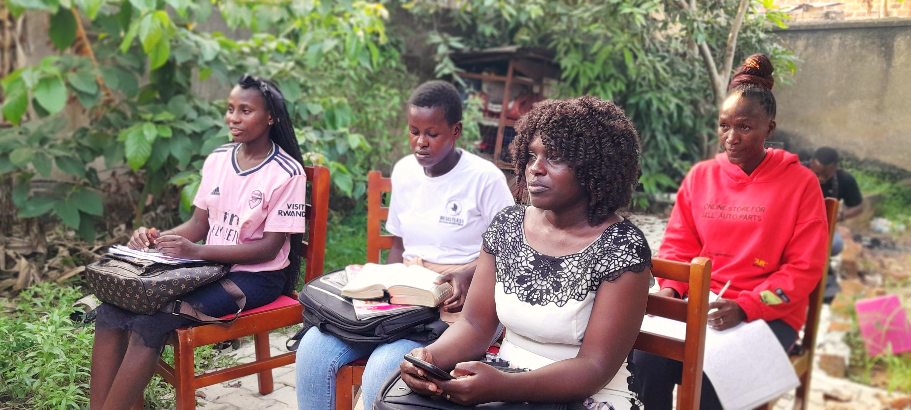
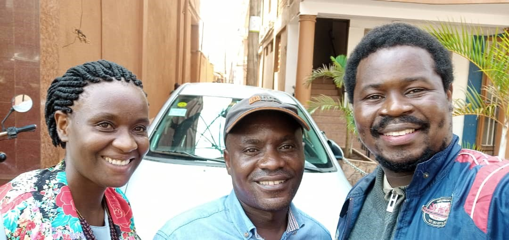
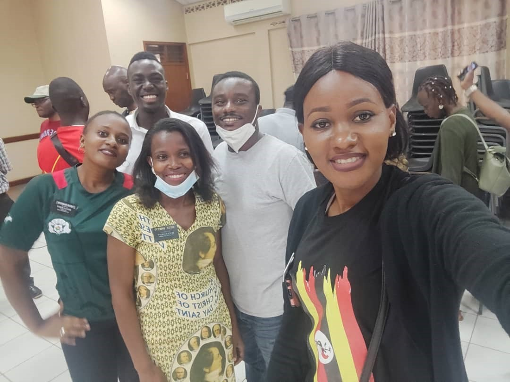
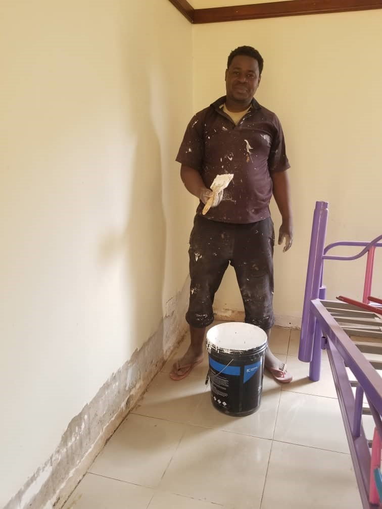
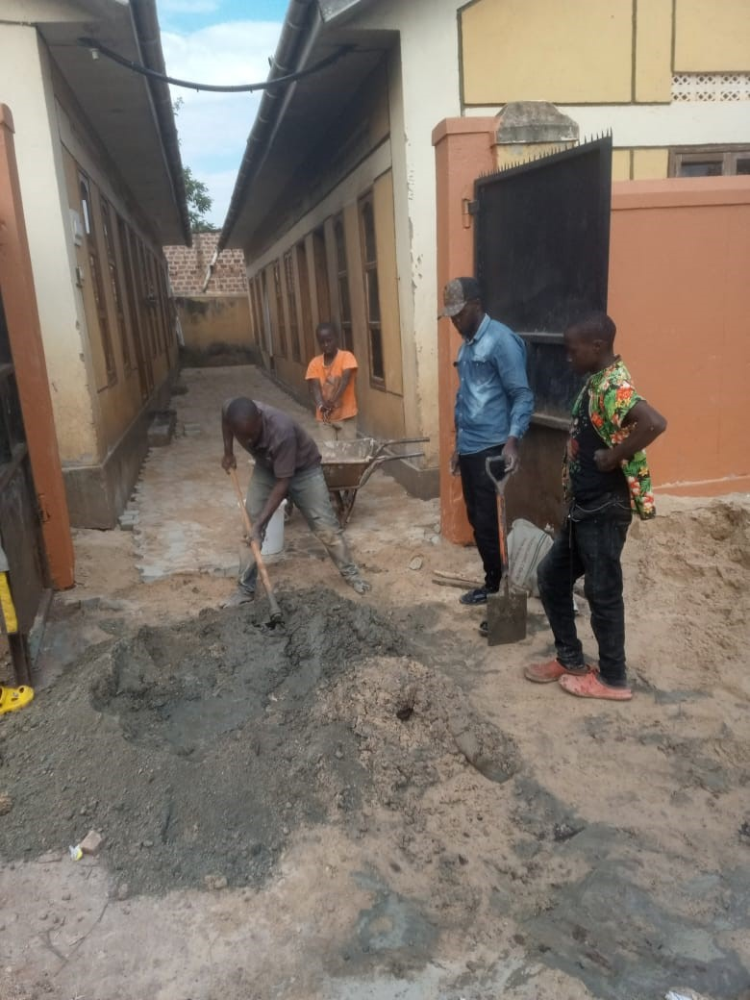
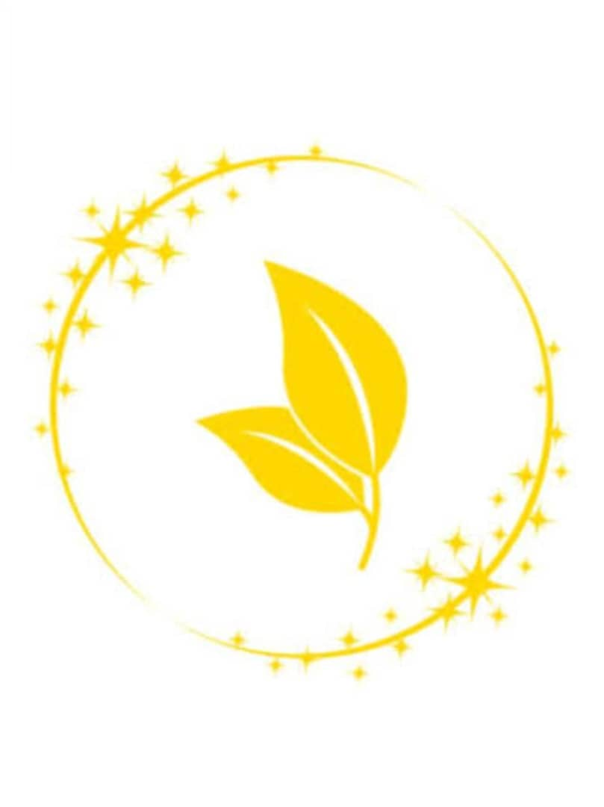

🌍 Our Programs
Be Selfless Uganda empowers students through education, mentorship, technology, and scholarships. Our programs are designed to nurture resilient minds, transform communities, and provide opportunities for students from all walks of life, both online and in person.
🌟 Our Leadership
Maraka William Stephen
Founder & Country Director
Maraka William Stephen is dedicated to guiding young Ugandans with passion and vision. He actively engages in mentorship, encourages leadership development, and fosters creativity among students. Through his hands-on approach, he nurtures problem-solving, resilience, teamwork, and innovation. His vision ensures that every initiative transforms communities positively, making education inclusive, technology-driven, and empowering for youth. Students under his guidance gain confidence, critical thinking skills, and lifelong inspiration to excel.Catherine Babirekere
Programs & Operations Director
Catherine Babirekere leads with precision and heart, managing programs and operations to ensure seamless delivery. She cultivates mentorship, motivates teamwork, and enhances student experiences. By encouraging creativity, resilience, and problem-solving, Catherine ensures all programs reach maximum impact. Her strategic approach strengthens community initiatives, fosters innovation, and inspires students to achieve academic and personal growth. She remains a steadfast supporter of youth development, making a lasting difference through guidance and practical mentorship. Maraka engages students in technology workshops, promoting curiosity, problem-solving, and collaborative learning. His guidance encourages leadership, critical thinking, and innovation while fostering confidence. He demonstrates real-world skills, inspires teamwork, and motivates students to embrace challenges positively. Through interactive sessions, he ensures students understand practical applications of technology, personal growth principles, and community development, providing them with tools to become resilient, responsible, and proactive leaders for Uganda's future.
Maraka engages students in technology workshops, promoting curiosity, problem-solving, and collaborative learning. His guidance encourages leadership, critical thinking, and innovation while fostering confidence. He demonstrates real-world skills, inspires teamwork, and motivates students to embrace challenges positively. Through interactive sessions, he ensures students understand practical applications of technology, personal growth principles, and community development, providing them with tools to become resilient, responsible, and proactive leaders for Uganda's future.

Catherine mentors students during interactive programs, emphasizing collaboration, creativity, and communication. She encourages problem-solving, resilience, and self-confidence while guiding them through academic and personal growth exercises. By fostering critical thinking and teamwork, she creates an environment where students feel supported and motivated. Her sessions empower youth to embrace challenges, innovate solutions, and develop leadership skills, preparing them to contribute meaningfully to their communities and pursue ambitious personal and professional goals.
🏆 Maraka's Milestones & Collaborations


Committee Formation
Maraka William Stephen’s election as Chairman established a strong foundation for youth programs. His leadership fosters collaboration, volunteerism, and student engagement across Uganda. Through organizing committees and mentoring young leaders, he ensures structured support, effective teamwork, and community-driven initiatives. Programs under his guidance inspire responsibility, creativity, and resilience while promoting ethical leadership. The committees actively implement initiatives that enhance education, mentorship, and technology skills, transforming the lives of countless students nationwide and fostering sustainable community development.


Mukono Tech Center
The Mukono Tech Center renovation, led by Maraka, created a vibrant space for learning and innovation. Students and volunteers now enjoy fully equipped classrooms, tech labs, and collaborative areas. Maraka personally oversaw construction, material sourcing, and painting, ensuring quality and safety. The center promotes technology literacy, mentorship, creativity, teamwork, and community engagement. Through hands-on activities, workshops, and programs, youth gain skills in leadership, problem-solving, and digital competence, preparing them to excel academically and professionally in Uganda and beyond.
